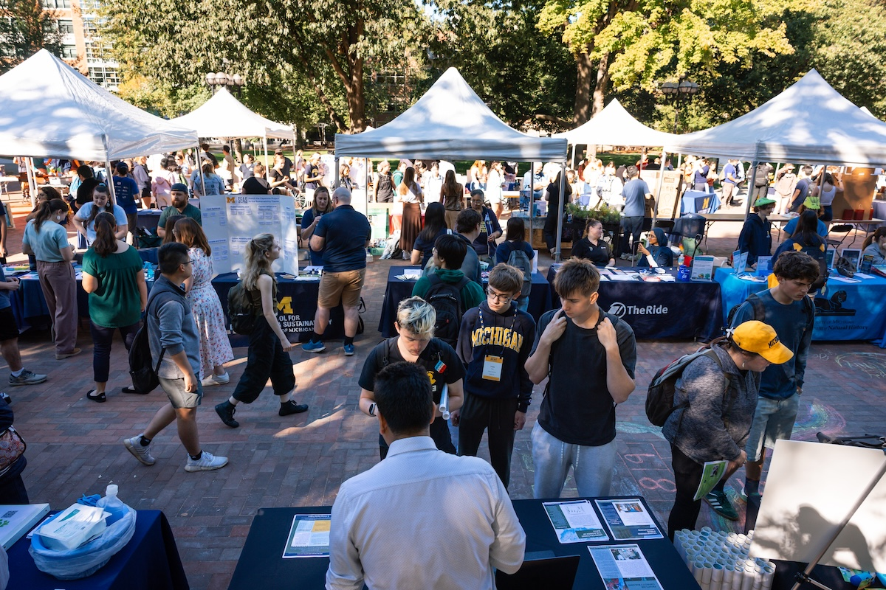

Introduction to Networking
Networking is an important part of professional development and career exploration. Building relationships with peers, professors, alumni, and professionals in the field can help students discover opportunities, gain advice, and learn about different career paths.
At the University of Michigan, students are encouraged to develop strong professional connections early in their academic journey. Networking can occur in many settings, including career fairs, informational interviews, student organizations, internships, and online platforms such as LinkedIn.

Networking Resources
Below are several resources provided by the University of Michigan Career Center that help students learn effective networking strategies. These guides explain the basics of networking, provide sample outreach messages, and offer advice on building a strong professional presence online.
-
Overview
This guide introduces the fundamentals of networking. It explains why networking is important, how to start conversations with professionals, and how informational interviews can help students learn more about potential careers.
-
Sample
Students often find it difficult to know how to reach out to professionals. This resource provides examples of emails and messages that can be used to request informational interviews, ask for career advice, or connect with alumni.
-
Digital Presence
Developing a professional online identity is increasingly important. This resource offers tips for improving LinkedIn profiles, building an online portfolio, and presenting a professional image on social media platforms.
Using Technology to Support Networking
For many students, the most difficult part of networking is taking the first step. Technology can make this process easier by helping students prepare messages, organize contacts, and research professionals working in their areas of interest.
Large language models such as ChatGPT and Gemini can assist students in drafting outreach emails, practicing interview questions, and brainstorming ways to introduce themselves professionally. While these tools should not replace genuine communication, they can help students build confidence as they begin networking.